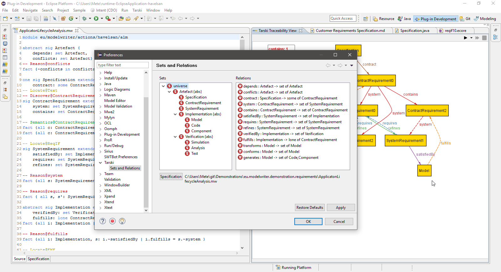
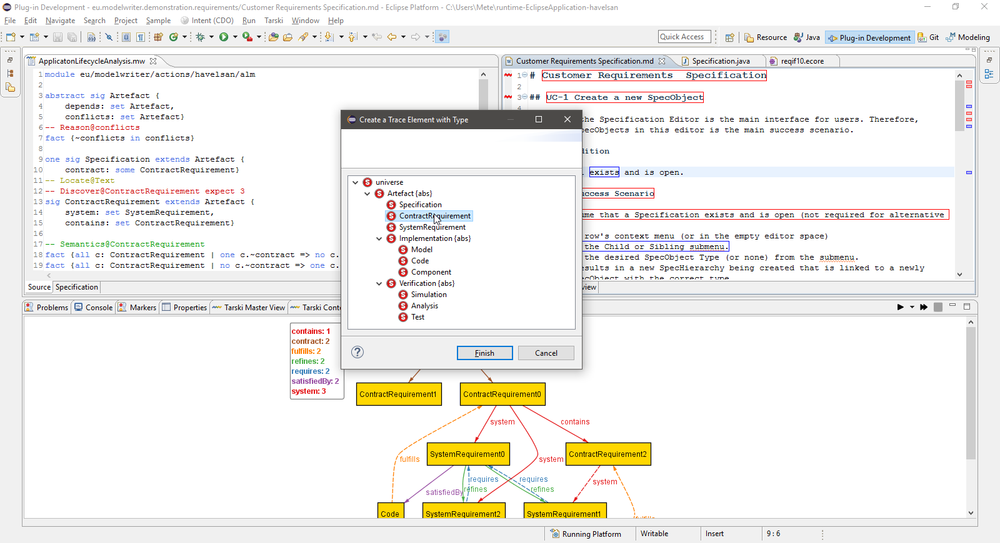
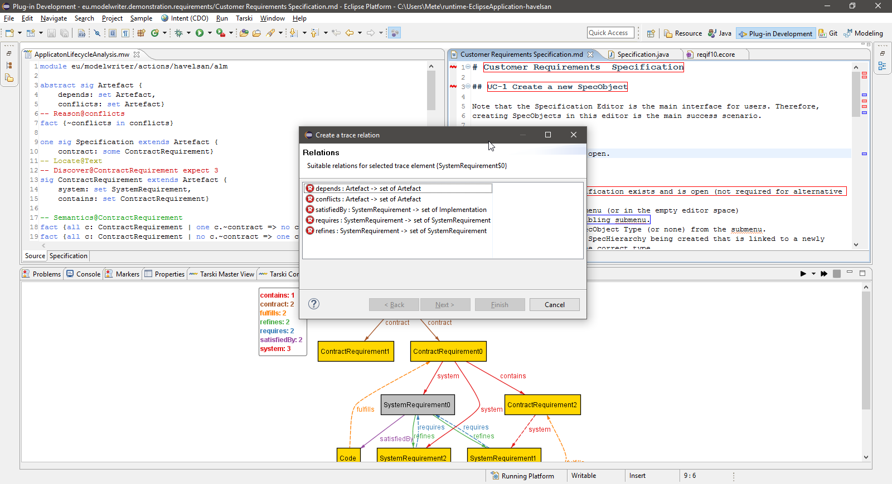
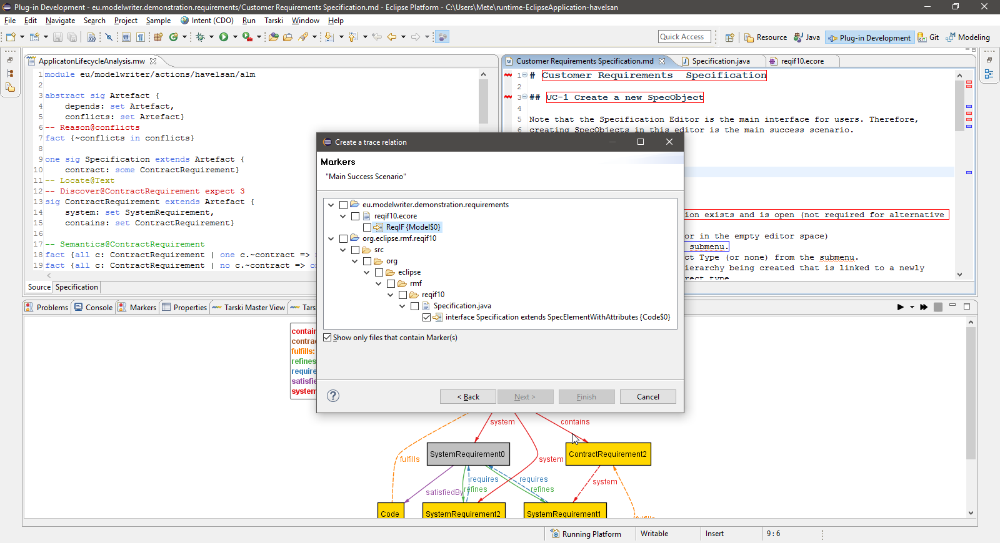

Introduction
In this work package, we introduce a new approach with its supporting platform which enables the user to interactively configure traceable elements and trace links. The specification is supported by formalizing the semantics of traceability in first-order relational logic in order to perform automated analysis such as consistency checking, reasoning on trace relations and trace element discovery. The usefulness of the approach is demonstrated in the context of application life-cycle platform in software industry and safety critical sofware development in automative industry and being tested in a use case in aviation industry.
Screen cast that shows Tarski in action (latest version of the platform)Installation of Tarski Platform on ModelWriter (older version of the platform)
For an example workspace, you can clone this source code repository Demonstrations and an example configuration file, you can directly get from HAVELSAN use case.

Type Hierarchy after loading an Alloy specification to the system

Management of first-order relational model
Assigning type to a unary relation while creating a trace element on a text file

Selecting a binary relation to create link

Selecting a range from existing trace elements for the binary relation

Automated Analysis
Work Package Objectives (from the Final Project Propsal)
The primary objective of this WP is to provide the synchronization mechanism of the ModelWriter platform that will keep the user-visible models consistent with the KB-stored models and vice versa. This work package addresses all problems related to the “model-to-model transformations” in ModelWriter.
- By
user-visible modelsis meant those models that have been explicitly created by a Technical Author, using e.g. a spreadsheet, a kind of UML diagram, a block diagram, a mind map, etc. or any modelling tool (part of the “Model” side of ModelWriter) he has found the most appropriate for authoring his technical information. - By
KB-stored modelis meant a part of the Knowledge Base devoted to storing pieces of related information, disregarding whether it is represented in user-visible models, in natural-language documents, or in both.
This mechanism will be based on model-to-model (M2M) transformations of two complementary categories:
- WP3.1, for transforming a
user-visible modelto a KB-stored model (this “mirrors” WP2.1). - WP3.2, for transforming a
KB-stored modelinto a user-visible model (this “mirrors” WP2.2).
Expected Results
An Eclipse-based M2M Transformation Framework, extensible so as to accommodate an increasing number of types of (user-visible) models. This will consist of the following main envisioned plug-in components:
Transformation Manager: provides the infrastructure to register and launch transformations.Configuration Manager: for personalizing the behaviour of the framework to meet the needs of a specific standard / organization / project / individual.Traceability Manage: keeps links between elements of user-visible models and elements of the KB.Synchronization Manager: triggering transformations when synchronization is needed.
Approach for the Work Package
The main goal of this WP is to develop a M2M Transformation Framework that supports the synchronization mechanisms for the ModelWriter tool.
These mechanisms will be based on a requirements synchronization framework that can be extended to support different requirements models (based on both textual and/or visual notations). The framework is made up of three main components:
- A meta-modelling infrastructure,
- A DSL for model transformation specifications, and
- A model synchronization API.
final version